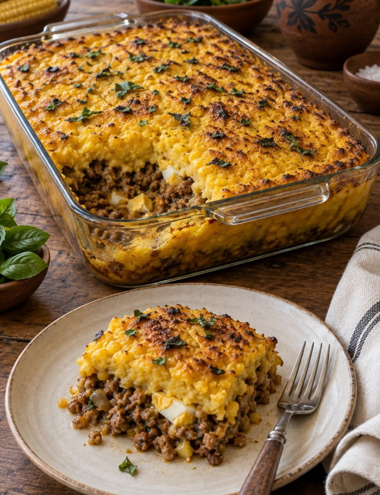

Início / Como preparar
Pronto em poucos minutos
Tire da geladeira, aqueça e leve à mesa. A paila vai ao forno.

Do refrigerador à mesa
Cinco passos, sem complicação.
-
Receba refrigerado
A entrega chega entre 0 e 4 °C, na paila de barro (individual) ou na travessa (familiar).
-
Mantenha no frio
Guarde no refrigerador entre 0 e 4 °C. A meta de vida útil é de 72 horas desde o preparo.
-
Aqueça
No forno a 180 °C por 15 a 20 minutos, ou no micro-ondas por 3 a 4 minutos.
-
Sirva
O recipiente é próprio para uso culinário: leve à mesa como veio do forno.
-
Devolva a paila
Lave e guarde para o próximo pedido. Ao devolver, você ganha desconto.
Forno ou micro-ondas
O forno, a 180 °C por 15 a 20 minutos, é o caminho da receita: assa a cobertura de choclo até dourar, como no preparo tradicional.
O micro-ondas, por 3 a 4 minutos, é a opção para quando a pressa fala mais alto.
A paila de barro e a travessa de vidro são próprias para uso culinário. A caixa e a manga de kraft são só a embalagem.

Cuidados e perguntas frequentes
Por que 72 horas?
É a vida útil-alvo do projeto, uma meta acadêmica que ainda precisa ser validada.
Posso reaproveitar a paila?
Sim. Ela é retornável: lave e guarde para o próximo pedido.
Qual a diferença entre os formatos?
O individual rende 1 porção de 450 g. O familiar rende 4 porções de 450 g.
A variedade Da Horta leva carne?
Não. É vegetariana, com cogumelos, berinjela, pimentão e cebola.